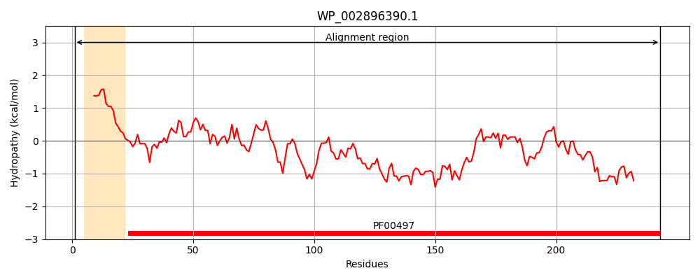
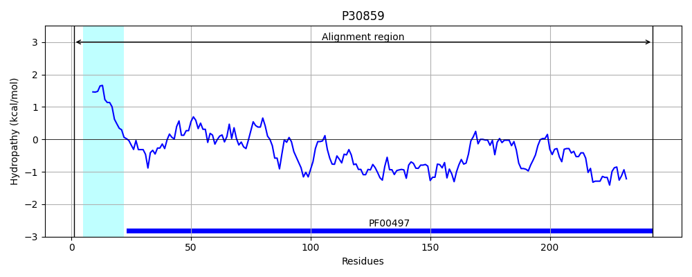
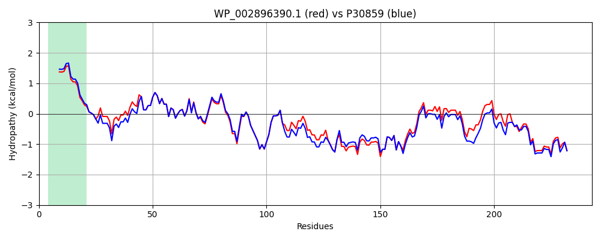

Hit Accession: P30859
Hit TCID: 3.A.1.3.3
Hit Description: gnl|BL_ORD_ID|9731 gnl|TC-DB|P30859|3.A.1.3.3 Arginine-binding periplasmic protein 1 precursor - Escherichia coli.
Mach Len: 243
e:0.000000
Query TMS Count : 1
Hit TMS Count: 1
TMS-Overlap Score: 0.900000
Predicted Substrates:CHEBI:2643;arginine
BLAST Alignment:
Score: 1161 , Bit scores: 451 bits, E-value: 1.2e-163, Alignment length: 243, Percentage identity: 91
Query: 1 MKKVLIAALLAGMSLSASAAQTIRFATEASYPPFELVDANNQIVGFDVDLANALCKEIDATCTFTNQAFDSLIPGLKFRRFDAVMAGMDITPEREKQVLFSTPYYDNSALFVGQQGKFTSIDQLKGKKVGVQNGTTHQKFITDKHPEITTVPYDSYQNAKLDLQNGRIDAVFGDTAVVTEWLKSNPKLAAVGDKVTDKAYFGTGLGIAVRQGNTDLQQKFNAALEKVKKDGTYQTIYNKWFQK 243
MKKVLIAAL+AG SLSA+AA+TIRFATEASYPPFE +DANNQIVGFDVDLA ALCKEIDATCTF+NQAFDSLIP LKFRR +AVMAGMDITPEREKQVLF+TPYYDNSALFVGQQGK+TS+DQLKGKKVGVQNGTTHQKFI DKHPEITTVPYDSYQNAKLDLQNGRID VFGDTAVVTEWLK NPKLAAVGDKVTDK YFGTGLGIAVRQGNT+LQQK N ALEKVKKDGTY+TIYNKWFQK
Sbjct: 1 MKKVLIAALIAGFSLSATAAETIRFATEASYPPFESIDANNQIVGFDVDLAQALCKEIDATCTFSNQAFDSLIPSLKFRRVEAVMAGMDITPEREKQVLFTTPYYDNSALFVGQQGKYTSVDQLKGKKVGVQNGTTHQKFIMDKHPEITTVPYDSYQNAKLDLQNGRIDGVFGDTAVVTEWLKDNPKLAAVGDKVTDKDYFGTGLGIAVRQGNTELQQKLNTALEKVKKDGTYETIYNKWFQK 243 | Protein Hydropathy Plots: |
|---|
|  |  |
Pairwise Alignment-Hydropathy Plot:
|
|---|
|  |